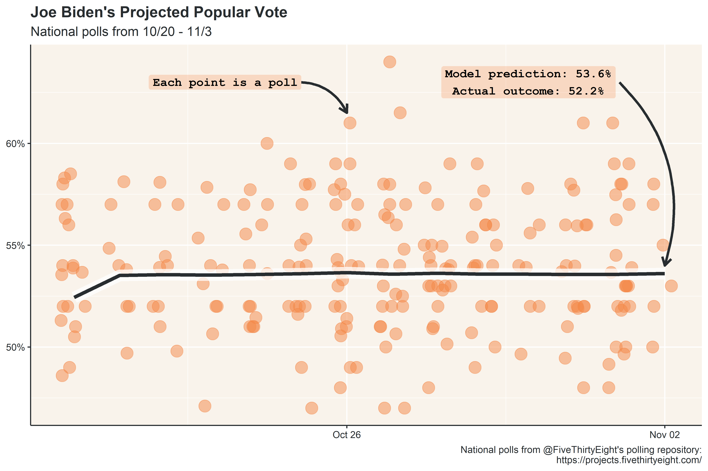

I’m about 4 months too late, but to practice forecasting, I made a modest projection for the 2020 national popular vote using polling data from the two weeks leading up to election day. In the weeks leading up to the election, aggregated polling was fairly stable, and the model projection was within 1.5% of the actual outcome (both the model and actual outcome are adjusted to exclude third parties and instead show the two-party vote share).

The projected outcome of Biden’s vote share, 53.6%, is only the most likely outcome in a distribution of possible outcomes predicted by the model. Of the possible outcomes, Biden wins the popular vote about 70% of the time, according to the November 2nd projection.

Like the projected vote share, the probability of Biden winning the popular vote remained fairly constant in the two weeks leading up to the election.

If you were like me, obsessing over the prominent forecast models prior to election day, you may notice that this projection is substantially less confident in the outcome than the leading forecasters. FiveThirtyEight and the Economist, for example, both projected similar popular vote outcomes (within a percentage point of this forecast), but gave Biden at least a 97% of winning the popular vote! There are a couple reasons for this difference:
- This model is one-dimensional : this is a pretty simple model built just to get practice with forecasting and some of the tools in R, so it only uses polls (and, at that, only a small subset of polls), whereas other forecast models used a wide variety of variables to inform the model (economic indicators, demographics, partisanship, etc.).
- This model doesn’t weight polls : aside from the sample size of the poll, this model doesn’t apply any weights or corrections to the polling data. The polling method, date the poll was taken, and pollster house effect (i.e., how partisan the pollster tends to be relative to the average) can be used to inflate or deflate the weight of each poll in the model. This simple model ignores all of that and treats every poll as equal.
- This model forces an uncertainty range : unlike other models, which are a set of linear regressions, this model is a relatively simple beta distribution of the vote, with the sum of parameters manually set to 50. This is a bit of technical mumbo-jumbo, but the gist is that a beta distribution allows you to control its “peaky-ness,” and I did this manually, whereas other forecasters had the model do it for them. Increasing the sum of parameters increases how peaky the distribution looks, and a sum of 50 was used based on Florian Muellerklein’s Georgia runoff model, which also used a sum of 50.
Some Notes
As always, you can find source data and code on github. I’m pretty happy with how this turned out - I’ve been getting a bit more comfortable with R, and the tools used for this post were pretty intuitive to implement. I’m also happy with the color palette I selected (HTML Color Picker is a godsend). The only improvement is that I could/should have saved quite a bit of code by writing over one of the plot themes, rather than re-writing the theme for each plot. Something to remember going forward.
Next week, I’ll dig into some of the county-level data from the election to see if there was any ticket splitting between the presidential election and the down-ballot races.